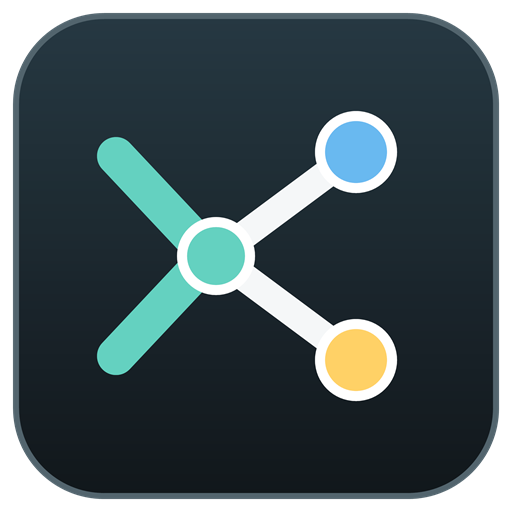

Edge blocks websites from opening this protected Windows folder. Select only the Kusto Explorer files instead.
%LOCALAPPDATA%\Kusto.Explorer
Paste the path into the file picker's address bar, then select UserConnections.xml and UserConnectionGroups.xml. Open tabs are optional .kebak files in the Recovery subfolder.